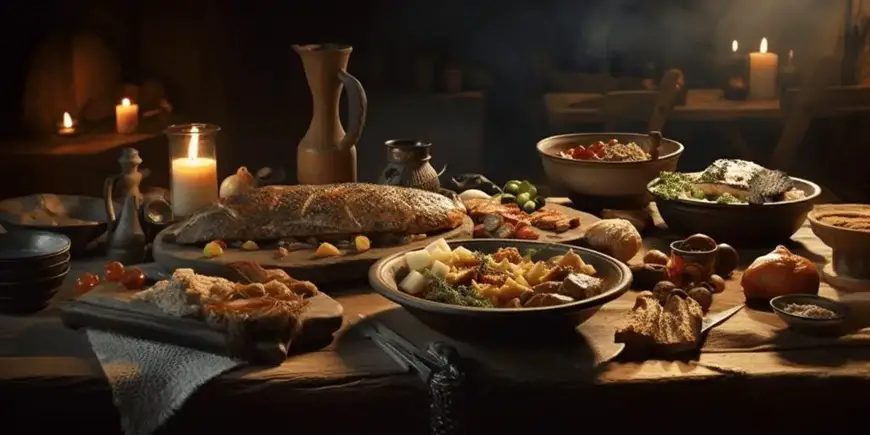

Skyr with Honey and Nuts
Skyr is a traditional Icelandic dairy product, similar to yogurt,
that was enjoyed by Vikings.
It is high in protein and can be enjoyed with a variety of toppings.
- 2 cups skyr
- 4 tbsp honey
- 1/2 cup mixed nuts, chopped
- 1/2 cup mixed berries (optional)
Instructions:
- Divide the skyr among four serving bowls.
- Drizzle each bowl with honey and top with chopped nuts and berries, if desired.
- Serve immediately.